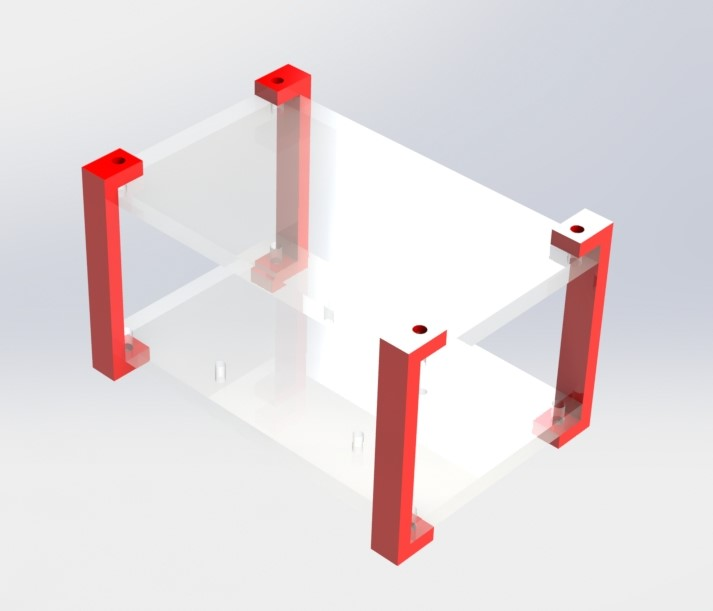
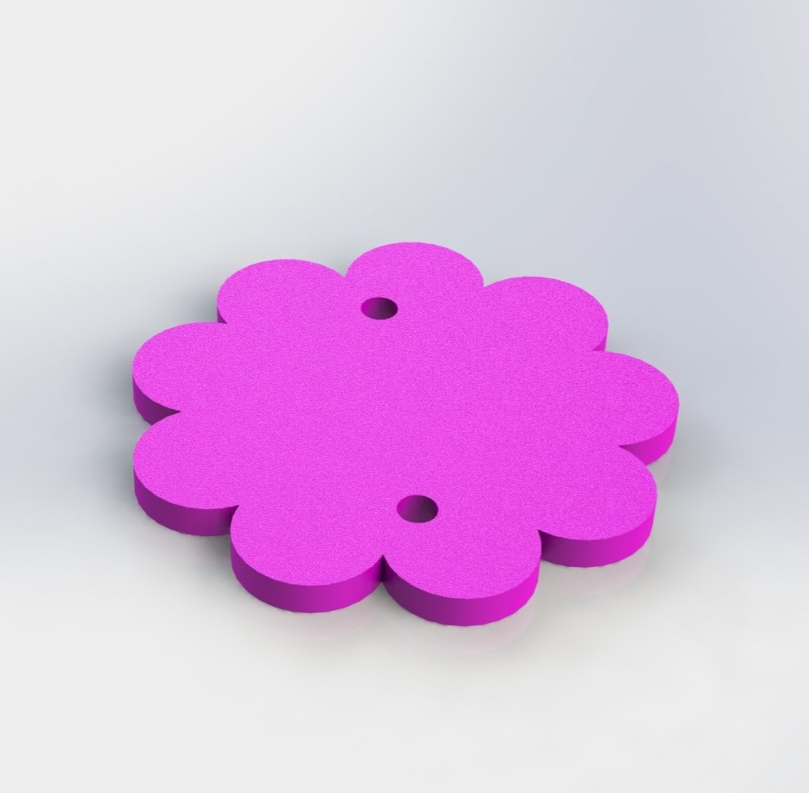
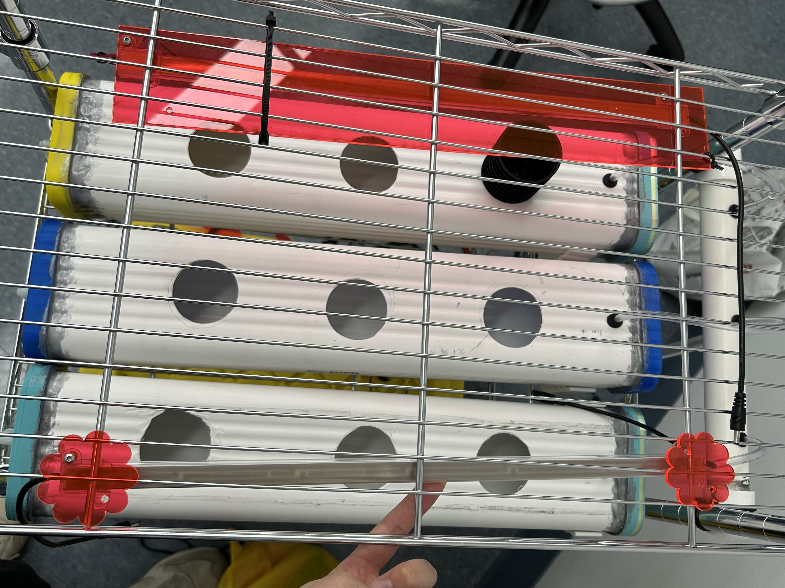
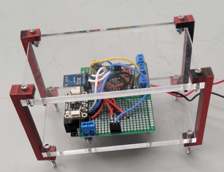
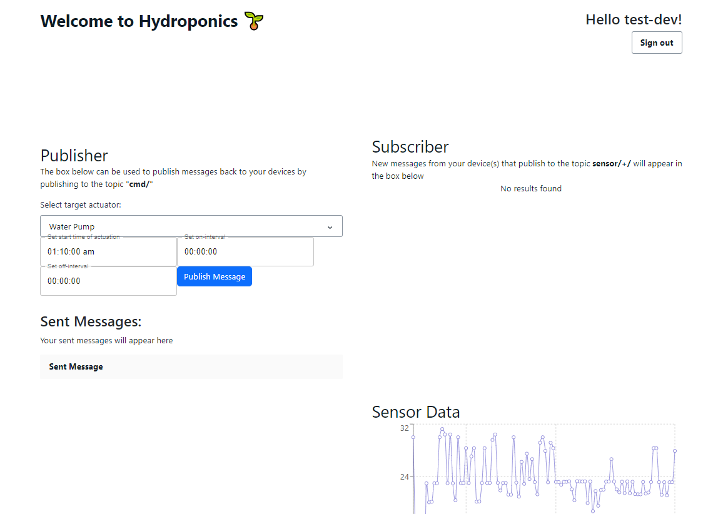
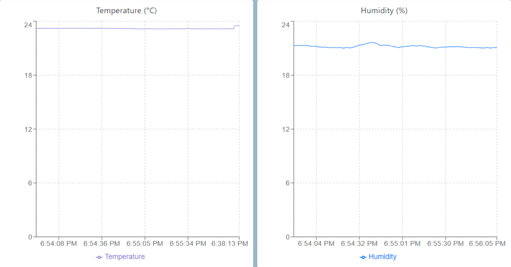

Sprint III
Sprint Overview
The goal of Sprint III was to improve upon Sprint II by
- Allowing the user to monitor the sensor readings and change the schedules online using a React app and AWS services
- Building secure mounts for electronic components
- Improve waterproofing for water-contacting parts
- Making it aestherically pleasing
Mechanical Updates
From Sprint II to Sprint III, we updated where and how we were mounting our electrical equipment. In Sprint II, our electrical components were fixed to a wooden board that was then mounted to the side of our cart. Though this was a temporary solution, we decided that our electronics should be moved to a part of our cart above where water was flowing, to avoid any accidents. We created this mount, with open sides for easier wire access, for the top of our cart. The red standoffs are 3D printed in PLA, and the plates are laser cut clear acrylic. We liked the aesthetics of this design, where all electronics are visible.
In Sprint II, we mounted the LED grow lights with an acrylic strip and zip ties. In this sprint, we improved the design of the LED mount by creating flower-shaped mounts which require less material and enhance the visual appearance of the cart.
 In order to mount the power box at the top of the cart, we modified the L-shaped hook from Sprint 1 to serve as a hook for an acrylic shelf. To secure the power box on the mount, we designed the shelf to be a shallow box, and we designed the acrylic box with finger joints and mortise/tenon joints so the acrylic box does not require fasteners. The acrylic box is fastened to the 3D-printed hook with 4 bolts.

Reasons for Design
We wanted to design around having safe and neat electrical housing for this sprint, and refining a lot of the integration from the previous sprint. This in turn makes our design much more safe, but also more professional and fits with our goal of nice aesthetics.
Electrical Updates
Most of the electrical work in this sprint involved taking what we made in Sprint II and organizing it. The biggest task was transferring everything that was on the wooden board onto a protoboard and putting it on the ESP32.

After putting all the components on the ESP32, we can now store the entire circuit inside the case we made earlier.
In terms of the electrical components in the circuit, nothing has changed from what we had for Sprint II

Software Updates
As mentioned earlier, most of the software work this sprint involved improving user interface with the React app we created using AWS services. Shown below is our React App for user interaction.
When the sensors publish their readings through the AWS MQTT service, the readings are added to an AWS DynamoDB database. Then, the React app fetches the values in the database using a GraphQL API to display it on the web page as a graph.

For changing the schedules, we used the same AWS MQTT service to
publish a new schedule in json format to the ESP32. The json is then
parsed to determine which actuator schedule to modify. Shown below is
how the json is formatted for uploading a new schedule.
{
"target":"water_pump",
"startTime":"01:10:00",
"onInterval":"00:00:05",
"offInterval":"00:00:10"
}
The command sent above would set the water pump to start at 1:10 am,
and alternate between turning on for 5 seconds and turning off for 10
seconds.
Sprint Reflection
We ran into some issues with the stability of our components, especially when testing by pushing the cart over rough surfaces, but aside from the power tray, everything is stable with no modifications. We want to iterate in the try by super gluing it together between now and demo day.